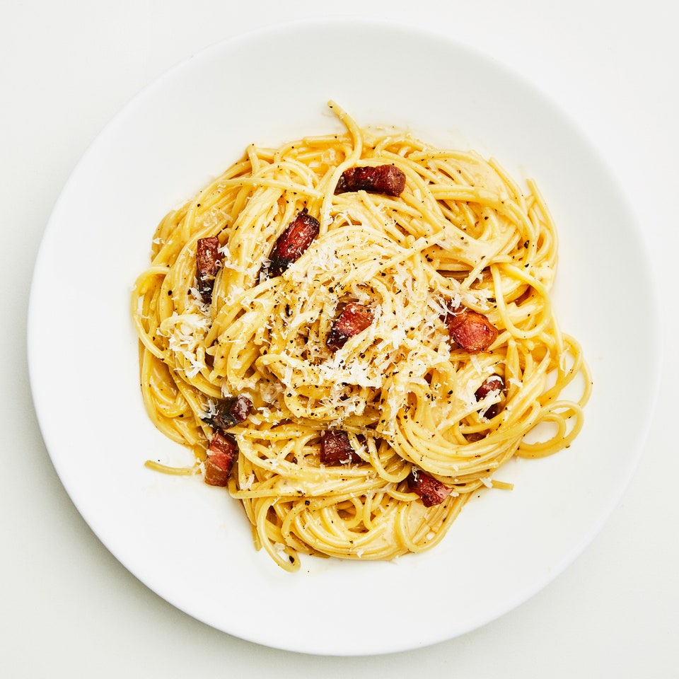

Carbonara

Description
This dish is a classic and simple recipe. The creamy and rich sauce made with egg yolks and parmesan complements the cripsy pancetta perfectly.
Ingredients
- 1 whole egg + 1 yolk
- Parmesan cheese
- Spaghetti
- Guanciale (or pancetta)
- 2 cloves of garlic
- Black pepper
- Salt
Instructions
- Step 1
- Step 2
- Step 3
Return to home